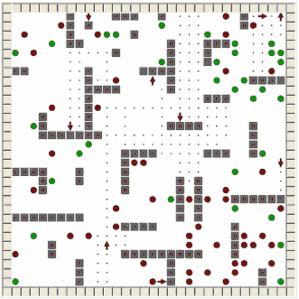
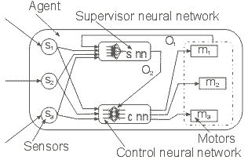
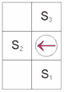

|
ENAA - Evolutionary Neuro Autonomous Agents
|
Author: Velibor Iliæ
ABSTRACT: This paper is about evolutionary autonomously agents controlled by neural networks. One hierarchical model of neural networks is suggested, and we also have a presentation of software ENAA that simulates evolutionary training of agents, which move inside arena and perform given task.
Key words: Evolutionary autonomous agents (EAA), artificial neural networks (ANN), genetic algorithm (GA), simulation of evolution
Date : Mart, 2002
Demo: https://www.dropbox.com/s/cw6y83edi3e0tqv/enaa.zip?dl=0
Iliæ, V., (2002): “Evolutionary Neuro Autonomous Agents”, Seminar on Neural Network Applications in Electrical Engineering “Neurel 6th”, Belgrade, Sponsored by IEEE Signal Processing Society, pp 37-40, IEEE Catalog Number 02EX609, ISBN 0-7803-7593-9, Library of Congress: 2002108419,
http://ieeexplore.ieee.org/xpl/freeabs_all.jsp?arnumber=1057963 |
Introduction
Problem description
Arena
Agents
Evolutionary training agents
ENAA simulation software
Conclusion
References
Agents present software which, in interaction with environment, is capable to react flexible and autonomous by following assigned goals. Interaction with environment in this context means that agent is capable of responding on input values from sensors, which it reads from environment, and to take a course of actions in order to change agent’s environment. Agent’s environment can be real world or virtual (software environment in computer or Internet). Autonomy means that system is capable of reacting without human (or any other agents) intervention. That also means that agents have control of their own actions and internal state. That system should be capable of learning from examples.
A typical experiment, in which evolutionary autonomous agents (EAA) are used, consists of an agents population which are evolving over many generations, in which only best survive in given environment and have possibility to transfer knowledge to future generations. Neural networks are especially adequate for this purpose because they have capability to learn. Neural network can read and process input information from environment through sensors and control behavior of agents making selection of their actions.
In example described in this paper, agents’ goal is to learn: how to explore an area of arena as large as possible, how to discover as much fields with food as possible and to avoid fields with poison. Agents are inserted in arena size 30×30 fields. First generation of agents doesn’t have defined behavior algorithm, so agents move randomly through arena (usually agents rotate on the left or right or their straight line moving is blocked by a wall). Agents get positive or negative points depending on their action. Points don’t affect on agents’ current behavior, but they tell us which of the agents is best adapted to the task in his environment. Agents have limited lifetime. When one of the agents “dies”, new agent is created on random position in arena, so there are always a constant number of the agents.
Arena in which agents move consists of 30×30 fields (figure 1.). Food and poison are randomly scattered in the arena. There are two regions with additional quantity of food and poison. Increased number of food is in the top right corner of arena and increased number of poison is in the right bottom corner.

Figure 1. – arena with agents
Fields in arena are marked in this way:
| Field look |
Description |
Sensor value |
| Green circle |
Food |
-0.5 |
| Red circle |
Poison |
0.5 |
| Grey square |
Wall |
1 |
| Blue spot |
Explored field |
-1 |
| White field |
Unexplored field |
0 |
Seasons present defined periods of time, which lasts 300 time units in this example. Season begins with placing the exact number of food and poison (50, 50) in arena at random position (considering existence of two regions with irregular concentration of food/poison). During season agents are moving through the arena, collecting food and poison and marking fields they pass as explored fields (blue spot). New season begins with regenerating number of food and poison in arena and fields that have been explored are erased.
Agent consists of: sensors which enable agents to read field content near him, motor that enable agents to move, control and supervisor neural network. Internal organization of agent is presented on figure 2. In ENAA agents are marked with arrows, which can be pointed to one of four directions (left, right, top or bottom).

Figure 2. – agent organization
Sensors are placed in agents like in figure
3. Sensors enable agents to read field content. First sensor reads content of field in front of the agent, and other two sensors read fields on the left and right of the agent. Agents move with a help of three motors, first motor enables straight line moving to one field ahead of the agent, and other two motors rotate agent left or right. While moving through arena agents mark fields they went across.

Figure 3. – position of sensors in agents
Control neural network (figure 2.) reads values of sensors s1, s2, s3 (figure 2, 3) and using that values controls agents movement (network decides which motor will be activated). Only one motor can be activated in one step (one time unit). Neural network gives three values on output (m1, m2 and m3) after processing values of sensors. Agent activates motor which output of neural network (m1, m2 and m3) has the largest value.
Supervisor neural network (figure 2.) reads values of sensors s1, s2, s3 and control neural network’s values of outputs through parameter O1. Value of this parameter (O1) has values (1, 0 or -1) depending on which motor has been activated. Agents have capability to modify their own behavior using supervisor neural network during their own lifetime. If output of supervisor neural network (parameter O2) has value larger then 0.5, agent changes connection weights values of control neural network. Agents have lower intensity on changing connection weights values of control neural networks than the mutation during which the new agent is created. However, agent frequently affects on connection weights of control neural network. On longer time periods, affect of a supervisor neural network on control neural network is considerable.
During evolutionary training, agents perform their own tasks by themselves and after defined time period their actions had been evaluated. After that, new generation of agents are created on sample of agents with the best results in previous generation. Procedure is repeating over many generations of agents, and finally result should be a population of agents whose behavior is most suitable in the given environment.
First generation of agents, which is created by starting simulation, doesn’t have information on their goals and don’t know how to behave. In beginning, agents are usually rotated to the left or to the right, or simply their moving is blocked by wall because they don’t know that it is necessary to rotate when wall is in front of them. If we want agents to learn how to move through arena and collect food, it’s necessary to motivate them by giving them positive points for right actions and negative points when making mistakes.
If agent collects more points then other agents, it usually means that this agent has better behavior algorithm. If agent has better conditions in environment then the others, which will also allow them to make advantage regarding other agents. For example, agent who moves ahead of any other agent has opportunity to collect more food, or if agent is created in region with more food, this agent has better starting conditions then the agent who is created in region with more poison then food.
Agent which collects more points owing better environment conditions, instead of better behavior algorithm, can slow down evolution progress or even turn in wrong direction. That situations could affect on several generations of agents in which future generations have worse results then the previous generation of the agents, but in longer periods of time these situations aren’t to harmful.
Agent’s lifetime is limited by quantity of life energy or maximum length of life. For every step, agents lose one energy unit. When agent loses all energy, it is destroyed and instead of creating a new agent on random position in arena. New agent’s connection weights of neural networks are shaped by mixing connection weights of agent who is destroyed and agent with the highest score. That given connection weights are performed by “mutation” which consists of adding randomly picked up numbers in interval -0.3 to 0.3 on connection weights of neural network. On the same way connection weights of control and supervisor neural network are obtained.
Agent’s lifetime is limited quantity of life energy which agent spends during movement through the arena. For every step agent loses one energy unit. Every agent gets 300 energy units on its creating. After walking over fields with food, agent receives additional 100 energy units and after walking over fields with poison agent loses 100 energy units.
Agent with good behavior algorithm collects more food and avoids poison. In this way, they increase their chance to make advantage over other agents and transfer their own experience to the new generation of agents.
Points that agents receive don’t affect their current behavior, but points are used to find agents with the best behavior algorithm. Agents with larger amount of points get opportunity to transfer their own gene (information) to new generations. When one of agents successfully solves situation, which allows him to get advantage over other agents, most of agents in next generations will inherit that behavior. If some of agents start to behave “badly” (for example agents start to collect poison instead food), agents with that behavior will not have a chance to transfer that behavior to future generations. In ENAA, agents receive points as the following table shows:
| Description |
Points |
| Explored field |
1 |
| Find new field |
3 |
| Field with food |
100 |
| Field with poison |
-1000 |
Agents have three sensors which can detect 5 different field states (non explored field, explored field, field with food, field with poison and walls) that make a set of 53=125 of possible situation which agents should successfully learn. From this number of possible situations, agents first learn more frequent situations and situations where the greater quantity of positive or negative points is realized directly. However, the training is longer for situations where agents receive points indirectly.
ENAA enables simulation of evolutionary training of agents in arena size 30×30 fields. In first generation of agents, connection weights of control and supervisory neural network receive random numbers in interval -0.5 do 0.5.
Agent’s goal is to learn how to explore the largest area of arena as possible, to collect food, and avoid walls and poisons. Program enables visually tracking training agents, shows current results of single agents in arena (number of steps, number of fields discovered, number of collected food and poisons, amount of energy, and agent’s age). During simulation, two log files were created with results which agents have realized and summary results by seasons. These log files can be loaded in Microsoft Excel for statistical analysis or drawing graphic.
ENAA allows user to turn on or turn off appearance of food and poison in arena during simulation and so simulate different situation which may occur. During the simulation, user can also change values of points which agents receive for collecting food, poison and explored and non explored fields, and in this way affect on agents behavior. During simulation, different positions of walls in arena can be loaded.
Simulation can be started without any food or poison in the arena. Later, options for their appearance can be turned on separately or at the same time. When agents once learn how to avoid poisons, they transfer knowledge on their future generations. That knowledge will not disappear, even if poisons will not appear in arena during the lifetime of several generations of agents.
ENAA was developed in Delphi 6.0 programming language.
Efficiency of evolutionary training neural networks (speed and accuracy) is less than neural networks trained by using defined training set (backpropagation algorithm). Models of agents, from example shown in this paper, can be used for collecting information in unknown systems. Also, example in this paper shows that neural network could be trained by using evolutionary procedure, selecting agents which neural networks will allow longer lifetime and collecting highest number of points.
Training neural networks in this way is interesting because networks are not trained by mathematical function, connection weights are changed by adding random numbers and selection of an agent which neural network gives best results.
Demo version of ENAA in which evolutionary neuro agents are applied and which is used for experimental research can be downloaded at:
https://www.dropbox.com/s/cw6y83edi3e0tqv/enaa.zip?dl=0
[1] Iliæ, V., (1999): “Training neural networks for recognition Cyrillic letters” (in Serbian), masters thesis, Technical Faculty “Mihajlo Pupin”, Zrenjanin
[2] Iliæ, V., (2000): “NeuroVCL components for Delphi”, NEUREL 2000, Zavod za grafièku obradu Tehnološko-metalurškog fakulteta, Belgrade
[3] Iliæ, V. (2000): “Force learn algorithm – training neural networks with patterns which have highest errors”, NEUREL 2000, Zavod za grafièku obradu Tehnološko-metalurškog fakulteta, Beograd
[4] Iliæ, V., (2001): “Systems based on agents technology” (in Serbian), http://solair.EUnet.rs/~ilicv/agenti.html
[5] Bernander, O., (1998): “Neural Network”, Microsoft(R) Encarta(R) 98 Encyclopedia. (c) 1993-1997 Microsoft Corporation
[6] Hotomski, P., (1995): “Systems of artificial intelligence” (in Serbian), Technical Faculty “Mihajlo Pupin”, Zrenjanin
[7] Jockoviæ, M., Ognjanoviæ Z., Stankovski S. (1997) “Artificial intelligence intelligent machine and systems” (in
Serbian), Grafomed, Belgrade
[8] Milenkoviæ, S., (1997): “Artificial neural networks” (in Serbian), Zadužbina Andrejeviæ, Belgrade
[9] Reisdorph, K., (1998): “Learn Delphi for 21 days”, Kompjuter biblioteka, Beograd
[10] Subašiæ, P., (1998): “Fuzzy Logic and neural networks”, Tehnièka Knjiga, Beograd
[11] “Frequently asked questions about AI”, http://www.cs.cmu.edu/Web/Groups/AI/html/faqs/ai/ai_general/top.html
[12] “Neural Network Frequently asked questions”, ftp://ftp.sas.com/pub/neural/FAQ.html
[13] Ruppin, E., (2002): “Evolutionary Autonomous Agents: A Neuroscience Perspective”, Nature Reviews Neuroscience, 3(2), February issue, p. 132 - 142
[14] Jennings, N., R., Sycara, K., Wooldridge, M., (1998) “A roadmap of agent research and development” (7-38), “Autonomous Agents and Multi-Agents systems”, Kluwer Academic Publishers, Boston
[15] Moukas, A., Pattie, M., (1998) “AMALTHAEA: An Evolving Multi-Agent Information Filtering and Discovery” (59-88), “Autonomous Agents and Multi-Agents Systems for the WWW”, Kluwer Academic Publishers, Boston
[16] Grand, S., Cliff, D., (1998) “Creatures: Entertainment Software Agents with Artificial Life” (39-57), “Autonomous Agents and Multi-Agents systems”, Kluwer Academic Publishers, Boston
[17] Downing, T., E,. Moss, S., Pahl-Wostl, C., (2000) “Understanding Climate Policy Using Participatory Agent-Based Cocial Simulation”, (199-213), “Multi-Agent-Based Simulation”, Second International Workshop, MABS 2000, Springer, Boston
[18] Grosof, B., N., (1997) “Building Comercial Agents: An IBM Research Perspective ”,
http://www.research.ibm.com/iagents/paps/rc20835.pdf
[19] Grosof, B., N., (1997) “Building Comercial Agents: An IBM Research Perspective ”, http://www.research.ibm.com/iagents/paps/rc20835.pdf
[20] Grosof, B., N., Foulger, D., A,. (1995) “Globenet and RAISE: Intelligent Agents for Networked Newsgroups and Customer Service Support”, http://www.research.ibm.com/iagents/paps/rc20226.pdf
[21] Chess, D., Harrison, C., Kershenbaum, A., “Mobile Agents: Are They A Good Idea?” http://www.research.ibm.com/iagents/paps/mobile_idea.pdf
[22] http://www.botknowledge.com/
[23] http://agents.umbc.edu/
[24] http://www.research.ibm.com/iagents/
[25] http://www.iiia.csic.es/~sierra
[26] http://www.agentlink.org
[27] http://multiagent.com/
[28] http://www.botspot.com
|